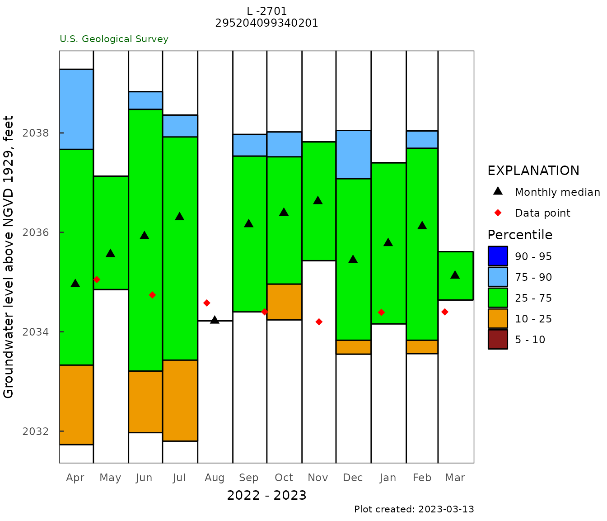

Customize Plots
Customize_plots.RmdThis vignette shows how to use R tools, primarily ggplot2, to modify and customize plots generated by HASP. To do this, we use data from site “295204099340201” which taps into the Edwards Aquifer in Texas.
Site Information
library(HASP)
siteID <- "295204099340201"
site_metadata <- site_summary(siteID, markdown = TRUE)## 295204099340201 AS-69-12-206 (Bandera County Edwards GW Well 1) <br/>Latitude: 29 deg 52 ' 04 " <br/>Longitude: 99 deg 34 ' 01 " <br/>Bandera County , Texas <br/>Hydrologic Unit: 12100302 <br/>Well depth: 346 feet <br/>Land surface altitude: 2286 feet above NAVD88 <br/>Well completed in : "Edwards-Trinity aquifer system" (S500EDRTRN) national aquifer.<br/>Well completed in : "NA" (218EDRDA) local aquifer.<br/>
data_info <- data_available(siteID)
kable(data_info)| Data Type | Begin Date | End Date | Count |
|---|---|---|---|
| Water-Year Summary | 2014-01-01 | 2022-01-01 | 9 |
| 2011-01-01 | 2021-01-01 | 3224 | |
| Daily Data | |||
| Precipitation, total, inches | 2018-06-05 | 2023-03-12 | 1698 |
| Depth to water level, feet below land surface | 2012-11-06 | 2023-03-12 | 3698 |
| Current / Historical Observations | 2012-11-06 | 2023-03-13 |
Get data using dataRetrieval
Using dataRetrieval code to get the data for this site:
library(dataRetrieval)
siteID <- "295204099340201"
parameterCd <- "62610"
statCd <- "00001"
# Daily data:
gw_level_dv <- readNWISdv(siteID, parameterCd, statCd = statCd)
# Field GWL measured:
gwl_data <- readNWISgwl(siteID)Making and Customizing Plots
Default HASP Monthly Frequency Plot
Use the function HASP::monthly_frequency_plot() to generate a monthly statistics plot.
# set the site title
site_title <- "L -2701\n295204099340201"
# set the ylabel
y_label <- dataRetrieval::readNWISpCode(parameterCd)$parameter_nm
# make the plot using the HASP function
monthly_frequency_plot(gw_level_dv,
gwl_data = gwl_data,
parameter_cd = parameterCd,
plot_title = site_title,
y_axis_label = y_label)
Customize Color Palette
Use supported optional arguments to change the color palette used to generate the HASP::monthly_frequency_plot plot.
# remake the plot with a custom color palette
monthly_frequency_plot(gw_level_dv,
gwl_data = gwl_data,
parameter_cd = parameterCd,
plot_title = site_title,
y_axis_label = y_label,
percentile_colors = c(
"#d7191c", "#fdae61", "#ffffbf",
"#abdda4", "#2b83ba"
)
)Further Customization of Multiple Plot Aspects
To fully customize the plot, it is necessary to define the plot object as a variable, which can then be passed to ggplot2 functions.
# define the plot as a variable
p_var <- monthly_frequency_plot(gw_level_dv,
gwl_data = gwl_data,
parameter_cd = parameterCd,
plot_title = site_title,
y_axis_label = y_label
)
p_var <- ggplot2::update_labels(p_var, list(x = "MONTH",
y = "GWL")
)
p_var <- p_var + ggplot2::theme(
# make the title font size 22 and boldface
plot.title = ggplot2::element_text(size = 22, face="bold"),
# make x-axis title size 16 and in italics
axis.title.x = ggplot2::element_text(size = 16, face="italic"),
# set y-axis title to size 14
axis.title.y = ggplot2::element_text(size = 14),
# make x-axis labels size 10 and dark green
axis.text.x = ggplot2::element_text(size = 10, colour = "darkgreen"),
# make y-axis labels size 14 and in italics
axis.text.y = ggplot2::element_text(size = 14, face="italic"),
# make the axis lines dark red with a line thickness of 1.2
axis.line = ggplot2::element_line(colour = "darkred", size = 1.2),
# make the axis ticks dark blue with a line thickness of 1.4
axis.ticks = ggplot2::element_line(colour = "darkblue", size=1.4),
# turn on major grid lines and make them gray and sized 0.1
panel.grid.major = ggplot2::element_line(colour = "gray50", size = 0.1),
# set the background color for the plot panel to a light gray
panel.background = ggplot2::element_rect(fill = "gray90"),
# set the legend background color to a light gray
legend.background = ggplot2::element_rect(fill = "gray75"),
# set the legend text to size 12 and make it italic
legend.text = ggplot2::element_text(size = 12, face="italic"),
# set the legend title to size 18
legend.title = ggplot2::element_text(size = 18)
)
p_var